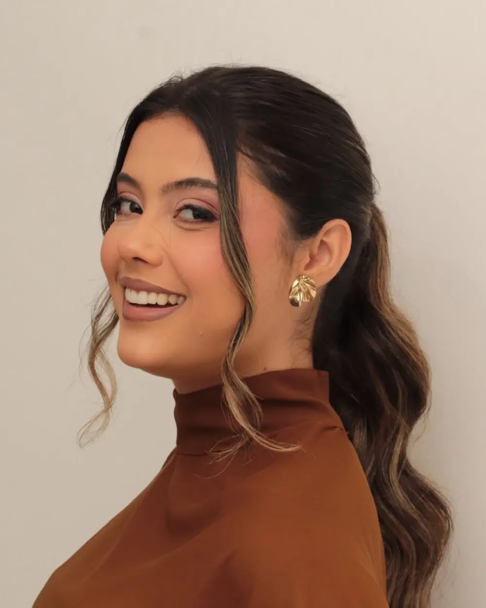
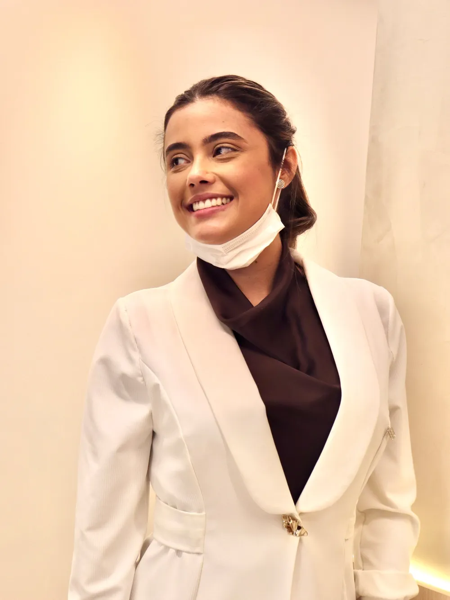
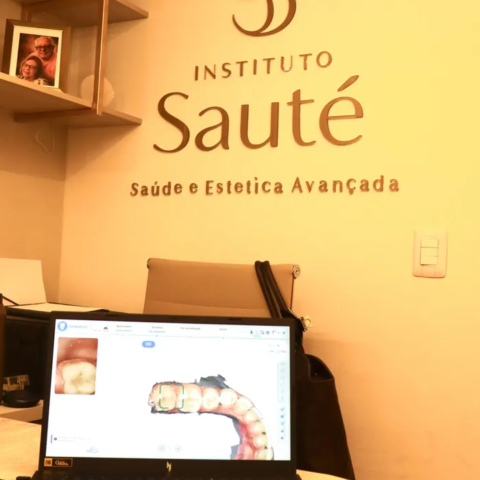
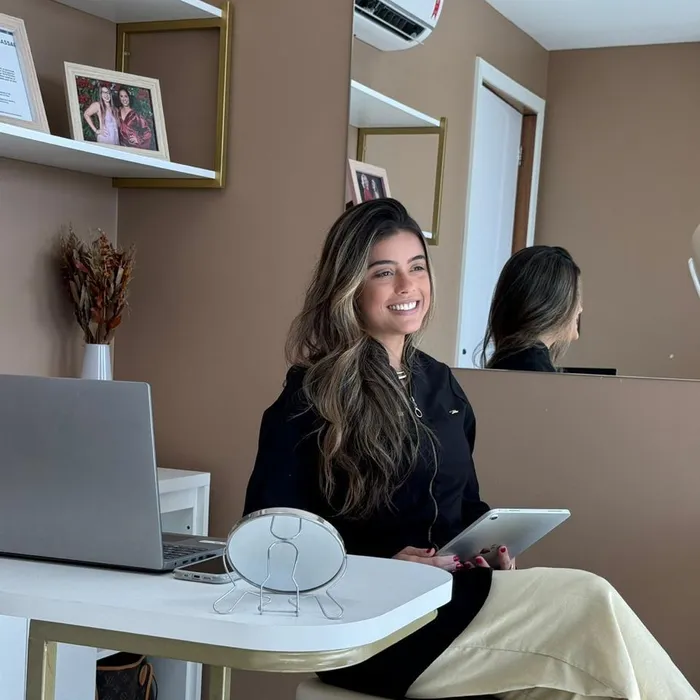
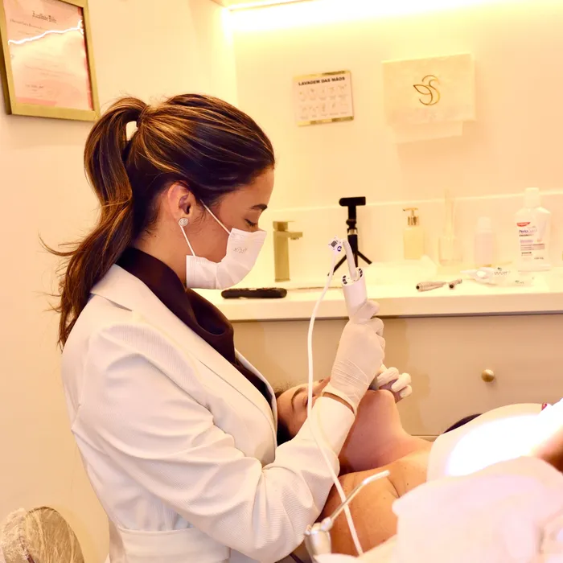
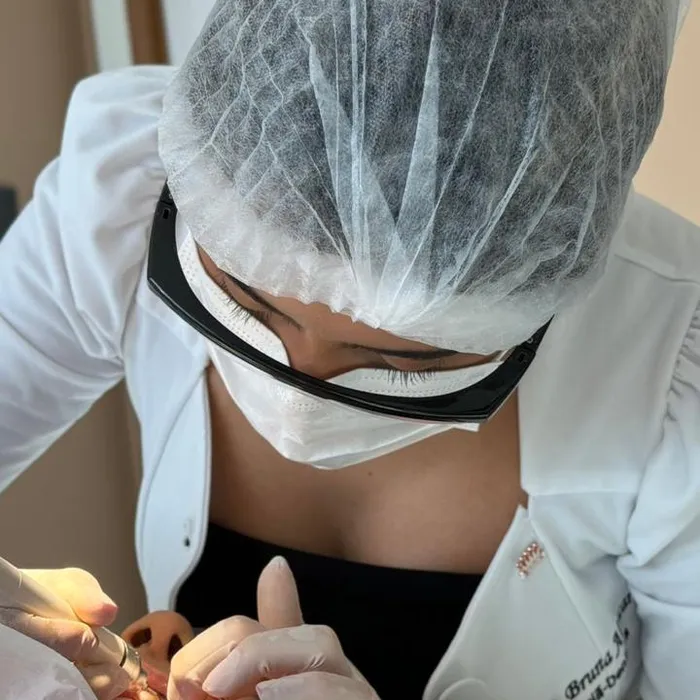
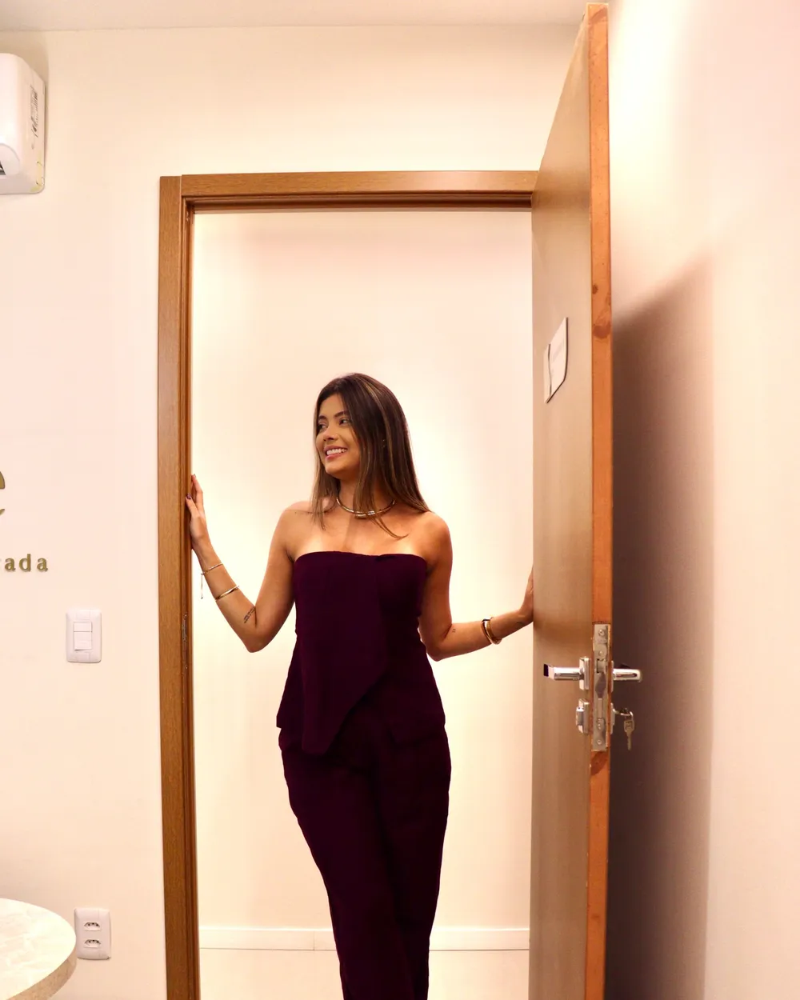

Alinhadores invisíveis
Uma opção discreta e removível para corrigir determinados problemas de alinhamento dentário. A indicação depende de avaliação odontológica.
Quero saber sobre alinhadoresConheça as opções para o seu sorriso com uma avaliação individualizada e orientação da Dra. Bruna Alencar.
Dra. Bruna Alencar · CRO-BA 21849
Tire dúvidas e consulte horários pelo WhatsApp.

Cada caso exige avaliação. Escolha um tema e converse com a Dra. Bruna Alencar.
Uma opção discreta e removível para corrigir determinados problemas de alinhamento dentário. A indicação depende de avaliação odontológica.
Quero saber sobre alinhadoresPodem modificar formato, proporção e aparência dos dentes em casos selecionados. A indicação considera a saúde bucal e as características de cada sorriso.
Quero saber sobre facetasUma opção para clarear a tonalidade dos dentes naturais, com protocolo definido após avaliação e orientação sobre os cuidados necessários.
Quero saber sobre clareamento
Dra. Bruna Alencar é cirurgiã-dentista dedicada à odontologia estética, com atendimento personalizado e planejamento individualizado para cada sorriso que passa por suas mãos.
Seu trabalho une precisão técnica, tecnologia de ponta e naturalidade, sempre respeitando as características únicas de cada paciente.
Dra. Bruna acredita que cada atendimento é sobre propósito: ouvir, entender e acompanhar de perto a jornada de quem confia nela o próprio sorriso.
Atende no Instituto Sauté, em Salvador (BA), onde saúde e estética se encontram em um único espaço, pensado para o cuidado completo do paciente.
Cuidado completo para o seu sorriso, com resultados reais.
Tratamento estético personalizado, com resultados naturais.
Reabilitação estética de alta durabilidade, com mínimo desgaste dental.
Recupera forma, função e estética do dente de maneira natural.
Prevenção e manutenção da saúde bucal, de forma individualizada.
Mais luminosidade ao sorriso, de forma planejada e segura.
Alinhamento discreto, com planejamento digital a cada etapa.
Acompanhamento do desenvolvimento ósseo e dental na infância.
Reabilitação de dentes ausentes com soluções naturais.
Procedimentos cirúrgicos bucais com técnica e segurança.
Tratamento e prevenção de doenças da gengiva.
Tratamento de canal, preservando o dente natural.
Diagnóstico e tratamento de boca, face e mandíbula.

Conheça as possibilidades que podem fazer sentido para as suas necessidades.

Entenda etapas, cuidados, limites e alternativas.

A saúde bucal é considerada antes de decidir por um procedimento estético.

Espaço para esclarecer dúvidas e conversar sobre seus objetivos.
Pelo WhatsApp, diga qual tratamento deseja conhecer.
Consulte a disponibilidade e receba as orientações para a consulta.
Você explica o que deseja melhorar e a Dra. Bruna Alencar avalia sua saúde bucal.
Receba informações sobre tratamentos indicados, cuidados, alternativas e próximos passos.
O primeiro passo é uma avaliação odontológica. A indicação depende da saúde bucal, das características do sorriso e dos seus objetivos.
Não. A indicação depende do tipo e da complexidade da movimentação necessária, além de outros fatores clínicos.
A necessidade e a extensão de qualquer preparo variam conforme o caso e a técnica indicada. Essa questão deve ser discutida durante a avaliação.
Pode causar sensibilidade temporária em algumas pessoas. O dentista deve orientar sobre riscos, protocolo e cuidados.
O prazo varia conforme o procedimento e as necessidades individuais. Uma estimativa mais adequada depende da avaliação.
O valor depende do procedimento indicado e das necessidades de cada caso. Entre em contato pelo WhatsApp para consultar as informações sobre avaliação e orçamento.
No Hangar Business Park, na Av. Luís Viana Filho, 13223, São Cristóvão, Salvador/BA. Veja o mapa e os horários na seção Localização.
Clique em “Conversar com a Dra. Bruna Alencar” para abrir o WhatsApp. A conversa serve para tirar dúvidas e combinar a avaliação; o agendamento só é confirmado após o retorno da equipe.

Agende sua avaliação e conheça de perto o cuidado do Instituto Sauté.
Solicitar agendamento pelo WhatsApp